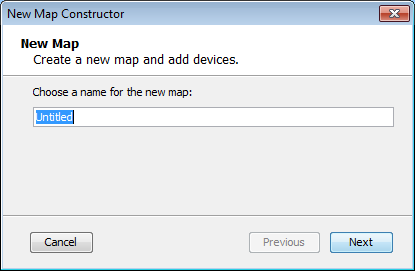

Starting Your Map
Creating Maps
Starting Your Map
When you launch InterMapper, a Map List window appears. It contains several demo maps, which show
examples of network maps, and contains brief descriptions of the elements
appearing on the maps. Double-click a map to open it.
After you have explored the demo maps, you are ready to use the Auto-discover
function to create your first map.
Creating a New Map
To create a new map, choose New Map... from the File Menu.
The New Map Constructor window appears:

Enter a map name, and click Next >.The second page of the New Map Constructor appears.

- Autodiscovery
- InterMapper's
Auto-discover function automatically scans your network, looking for network
devices to add to your map. It uses several heuristic techniques (including
SNMP probes, ICMP echo packets, and DNS and NBP queries) to
discover all the devices that are present. It then places those devices
on a map.
- Manual Entry - Type or paste
a list of host names or IP addresses for the devices you want to add to the
map.
- Import a file
- Specify
a tab-delimited, CSV, or XML import file. For more information, see Importing
Data Into Maps.
For information on using the Auto-discover function, see Using
Auto-discover.
Importing Data into a Map
You can also create a map by importing data in a text file. For more
information, see Importing
Data Into Maps.
InterMapper Labels
InterMapper
places a label on each
device it finds. By default, it uses the device's full DNS
name. Networks are labeled with both an IP address and the number of
bits in the subnet mask (indicating the network range). For example, the network labeled 192.168.1.0/24
indicates that the IP devices are in subnet 192.168.1.0,
with a subnet mask of 24 bits (255.255.255.0).
Note: You can change the label that appears
for each device using the Label... command, available from the Format menu.